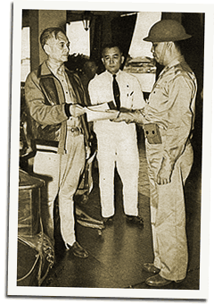
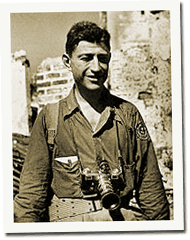

|
j
a v a s c r i p t |
December 16, 1941
Watches advanced to give us an extra hour of daylight. Went to the office, bought some medicines and got a quick, nervous haircut. Rattled by a false alert, one barber refused to shave his client. Olongapo raided “lightly” today. An earlier raid caught a group of PBY Catalinas returning to land there — with disastrous consequences.

Quezon, Vargas & Manuel Roxas
Given “full powers,” Quezon ordered the “comandeering of food.” Much transport was comandeered at the start of the war. I guess an army marches by its stomach too. Lt. Colonel Manuel Roxas is now in “active service” as MacArthur’s aide-de-camp, reports La Vanguardia. There’s a picture of him in plain uniform looking stout and healthy. The Hon. José P. Laurel was named Secretary of Justice today; he gets a picture too. There’s one too of Benigno Ramoz, who protests against being labeled pro-Japanese: “Even now I can [sic] grab a rifle and go to the front with my son to prove my loyalty to your Excellency [Quezon] and to America.” Old man Aguinaldo protests too ... against the Japanese using his name in their propaganda!

Carl Mydans
LIFE Photographer Life Magazine photographer, Carl Mydans, passed by Baguio and was quoted as saying that it was hard to find real enemy action other than the usual raids on military objectives. |
|
|
|
|